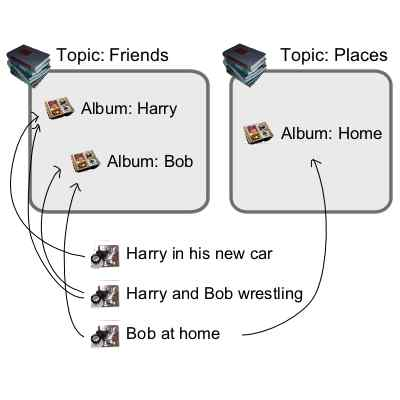

How do Albums work?
This page explains how Albums, the way to organize your photos, work. Your site will benefit greatly from the correct use of albums, because users will be interested in your site longer.
Folders
Folders are how files are organized on your computer, folder contain files and more folders. This is hierarichal. Camera Life supports organizing photos by folder, but folders are old news.
What are Albums?
In Camera Life, an Album is a way to keep similar photos together. An Album can be something like a certain person, a place, event, etc.
In this example, I have Albums of Harry (my friend), Bob (another friend), and Home. Albums are arranged into what we call topics.

What's so great about that?
The great part about Albums is that they're automatic. Any time you name or rename a photo, if it belongs in any Albums, it will be added instantaneously. When you create an album, you set the "TERM" for that album. Any photos that contain TERM in their description will be part of the Album. Usually TERM will be the same for the NAME of an Album, but sometimes it might not be
OK, how do I make Albums?
- Login to your site, this is already done if your just finished the install.
- You should first add a few photos into the system, and edit their descriptions.
- Search for a word that is common in their descriptions. (click here to search)
- Choose "Create an album of these photos" on the menu up top.
- Fill in the requested fields
- Go to your site to see how this album integrates with your site.